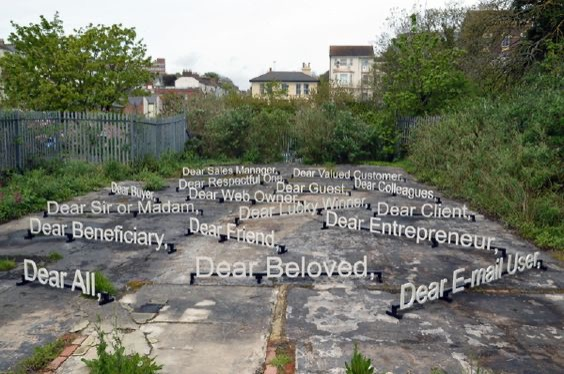

Workshop: Gemeinsam an einem Repository arbeiten
Bis jetzt hat jede und jeder am eigenen Projekt gearbeitet. Heute arbeitet ihr zu viert am gleichen: Ihr sammelt Begrüssungen aus allen Sprachen, die ihr kennt, und baut daraus gemeinsam eine Website.
- Einen GitHub-Account anlegen (falls noch nicht vorhanden) und den Benutzernamen der Kursleitung schicken.
- GitHub Desktop und VS Code installieren.
- GitHub Desktop öffnen und anmelden: Sign in to GitHub.com. Die Anmeldung läuft über den Browser. Name und E-Mail für eure Commits werden dabei gleich übernommen.
Worum es geht
Jede Vierergruppe hat ein eigenes Repository. Darin liegen eine index.html mit einer Liste von
Begrüssungen und eine style.css. Über GitHub Pages ist die Seite bereits online. Jede Änderung,
die auf GitHub landet, ist nach ein, zwei Minuten auf der Website sichtbar.
Die Herausforderung: Wenn vier Leute gleichzeitig an denselben Dateien arbeiten, darf niemand die Arbeit der anderen überschreiben. Genau dafür ist Git gemacht.
Ihr arbeitet mit zwei Programmen: In VS Code schreibt ihr HTML und CSS. In GitHub Desktop macht ihr alles, was mit Git zu tun hat.
Zum Nachschauen: Daniel Shiffmans Serie zu Git und GitHub (Video, Englisch). Er sammelt dort gemeinsam ein Gedicht, wir sammeln Begrüssungen.
Inhalte: Begrüssung als Kontakt
Der niederländische Künstler Niels Post zeigte 2014 im Ausstellungsraum The Space in Hastings/St. Leonards (UK) eine Installation aus Begrüssungen: eine Auswahl von Anreden aus Spam-Mails, die alle mit «Dear» beginnen. Post sammelt solche Texte in seinen Spamfiltern und überträgt sie unverändert, mit allen Tipp- und Grammatikfehlern, in der Schrift Arial, einer der Grundschriften des Internets.
Eine Begrüssung ist der Moment, in dem Kontakt entsteht. Sie zeigt, wie nah wir jemandem stehen, oder wie nah jemand tut: «Dear friend» von einer Maschine an tausend Adressen gleichzeitig. Was macht eine Begrüssung echt? Was verrät sie über die Beziehung?
Sammelt Begrüssungen in allen Sprachen, die ihr sprecht oder kennt: förmliche und vertraute, gesprochene und geschriebene, auch seltsame. Schreibt bei Bedarf eine kurze Erklärung dazu: Was heisst es wörtlich? Wann sagt man das, und zu wem? Wir werden später mit diesen Begrüssungen weiterarbeiten und sie interaktiv machen.

Quelle: We Like Art, «Niels Post – nieuwe handgezaagde [SPAM] werken», 11. Oktober 2017, welikeart.nl/niels-post-3.
Einladung annehmen
Damit ihr im Repository eurer Gruppe arbeiten dürft, lädt euch die Kursleitung als Collaborator ein.
- GitHub schickt euch eine E-Mail mit der Einladung. Alternativ seht ihr sie auf GitHub oben rechts unter dem Glocken-Symbol.
- Auf Accept invitation klicken.
- Das Repository auf GitHub öffnen und kurz umschauen: Welche Dateien gibt es? Wie sieht die Seite online aus?
Repository auf den Rechner holen
Einmalig holt ihr euch eine Kopie des Repositorys auf den Laptop. Das heisst Clone.
- In GitHub Desktop: File → Clone repository…
- Im Tab GitHub.com das Repository eurer Gruppe auswählen.
- Unter Local path sehen, wo der Ordner gespeichert wird, dann Clone klicken.
- Auf Open in Visual Studio Code klicken. Der Projektordner öffnet sich in VS Code.
Oben in GitHub Desktop seht ihr drei Felder: welches Repository, welcher Branch (bei uns immer
main) und rechts einen Button, der seine Aufgabe wechselt:
| Button | Was er macht |
|---|---|
| Fetch origin | Nachschauen, ob es auf GitHub Neues gibt. Holt noch nichts. |
| Pull origin ↓ | Die neuen Commits der anderen holen. Die Zahl zeigt, wie viele. |
| Push origin ↑ | Die eigenen Commits zu GitHub hochladen. |
Der Grundrhythmus
Alle vier arbeiten direkt auf main. Das funktioniert gut, wenn ihr euch an einen festen
Rhythmus haltet:
- Pullneusten Stand holen
- Bearbeitenin VS Code, speichern
- CommitÄnderung festhalten
- Pullnochmals nachschauen
- Pushhochladen
- Vor jedem Bearbeiten pullen. Wer auf einem alten Stand arbeitet, riskiert Konflikte.
- Kleine Commits, oft pushen. Lieber drei kleine Commits als ein grosser nach einer Stunde.
- Nicht verwirrt sein, wenn plötzlich fremde Einträge auftauchen. Das sind die Commits eurer Gruppe. Genau so soll es sein.
Begrüssungen eintragen
Öffnet in VS Code die index.html. Jede Begrüssung ist ein Listenelement mit immer gleichem
Aufbau:
<li class="gruss" lang="gsw">
<p class="wort">Hoi zäme</p>
<p class="info">Schweizerdeutsch</p>
<p class="notiz">Zu mehreren Leuten, wörtlich „Hallo zusammen“</p>
<p class="von">eingetragen von anna</p>
</li>Kopiert einen bestehenden Eintrag und passt ihn an. Tragt zwei bis drei Begrüssungen ein, gerne in verschiedenen Sprachen.
Das Attribut lang
Das Attribut lang sagt dem Browser, in welcher Sprache ein Text geschrieben ist. Für uns sieht
es gleich aus, aber für den Computer macht es einen grossen Unterschied:
- Screenreader lesen den Text mit der richtigen Aussprache vor, statt „Merci“ mit deutscher Stimme.
- Schrift: Chinesisch und Japanisch teilen viele Zeichen, die aber leicht verschieden
aussehen. Mit
langwählt der Browser die passende Variante. - Silbentrennung mit
hyphens: autofunktioniert nur, wenn die Sprache bekannt ist. - Im CSS könnt ihr Sprachen gezielt gestalten (siehe unten).
Sprachcodes, zum Beispiel: de Deutsch, gsw Schweizerdeutsch, fr
Französisch, it Italienisch, rm Rätoromanisch, es Spanisch,
pt Portugiesisch, tr Türkisch, sq Albanisch, sr
Serbisch, uk Ukrainisch, ar Arabisch, fa Persisch, he
Hebräisch, ta Tamil, zh Chinesisch, ja Japanisch.
Schreibrichtung mit dir
Arabisch, Persisch und Hebräisch laufen von rechts nach links. Damit das richtig dargestellt wird, kommt
zusätzlich dir="rtl" dazu (right to left). Begrüssungen in anderen Schriften tragt ihr direkt
so ein, wie man sie schreibt:
<li class="gruss" lang="ar" dir="rtl">
<p class="wort">مرحبا</p>
<p class="info">Arabisch · marhaban</p>
<p class="notiz">Wörtlich etwa „Willkommen“, alltäglich wie „Hallo“</p>
<p class="von">eingetragen von mira</p>
</li>So sieht es im CSS aus
Mit :lang() und [dir="rtl"] lassen sich Sprachen und Schreibrichtungen gezielt
ansprechen:
/* Alle japanischen Begrüssungen in einer passenden Schrift */
.gruss:lang(ja) {
font-family: "Hiragino Mincho ProN", "Yu Mincho", serif;
}
/* Arabische Schrift ist bei gleicher Grösse kleiner: etwas grösser setzen */
.gruss:lang(ar) .wort {
font-size: 1.3em;
}
/* Rechts-nach-links-Einträge bekommen den Akzentstrich rechts */
.gruss[dir="rtl"] {
border-right: 4px solid black;
}
/* Noch eleganter: "inline-start" ist links bei Deutsch und rechts bei Arabisch */
.gruss {
border-inline-start: 4px solid black;
}
Schreibrichtung mit writing-mode
Die writing-mode CSS-Eigenschaft legt fest, ob Textzeilen horizontal oder vertikal angeordnet werden und in welche Richtung der Text fließt.
https://developer.mozilla.org/de/docs/Web/CSS/Reference/Properties/writing-mode
/* Japanisch senkrecht, von oben nach unten */
.gruss:lang(ja) .wort {
writing-mode: vertical-rl;
}
Commit und Push
- In VS Code speichern (
Cmd + Sbzw.Strg + S). Ein weisser Punkt im Tab bedeutet: noch nicht gespeichert. - Zu GitHub Desktop wechseln. Links unter Changes steht die
index.html. Das Häkchen davor heisst: Diese Datei kommt in den Commit. - Auf die Datei klicken: Rechts seht ihr, was sich geändert hat. Neue Zeilen sind grün, gelöschte rot. Das ist ein Diff.
- Unten links ins Feld Summary eine kurze Commit Message schreiben, z. B. „Begrüssungen auf Albanisch ergänzt“.
- Auf Commit to main klicken. Der Commit ist jetzt auf eurem Rechner gespeichert, aber noch nicht auf GitHub.
- Oben auf Fetch origin klicken: Gibt es Neues? Falls ja, zuerst Pull origin.
- Auf Push origin klicken.
Jetzt ist euer Commit auf GitHub. Im Repository unter dem Tab Actions seht ihr, wie die Website neu gebaut wird. Grüner Haken: Eure Begrüssungen sind online. Unter History in GitHub Desktop seht ihr die gemeinsame Geschichte des Projekts, mit den Commits aller.
Wenn jemand schneller war
Das passiert ständig: Ihr habt committet, aber in der Zwischenzeit hat jemand aus eurer Gruppe auch gepusht. Wenn ihr dann auf Push origin klickt, meldet GitHub Desktop, dass es auf GitHub neuere Commits gibt.
- Fetch bzw. Pull origin klicken.
- Git führt die Änderungen der anderen mit euren zusammen. Haben alle an verschiedenen Stellen gearbeitet, passiert das automatisch. In der History erscheint ein Commit „Merge branch 'main' …“.
- Danach Push origin klicken.
Runde 2 – Gemeinsam gestalten
Jetzt bekommt die Seite ihr Aussehen. Jede Person in der Gruppe übernimmt einen Block in der
style.css:
/* ===== 1 · Seitenkopf: header, h1 ===== */
/* ===== 2 · Liste: .liste ===== */
/* ===== 3 · Eintrag: .gruss, .wort, .info, .notiz, .von ===== */
/* ===== 4 · Sprachen und Schriften: :lang(), [dir="rtl"] ===== */Sprecht euch kurz ab: Welche Stimmung soll die Seite haben? Förmlich wie ein Brief, laut wie eine Spam-Mail, nah wie eine Nachricht an eine Freundin? Schrift, Grösse, Farbe, Abstände, Rahmen, Rundungen – alles ist erlaubt.
- Zuerst pullen. Inzwischen sind viele Begrüssungen dazugekommen.
- Nur im eigenen Block arbeiten.
- Der Rhythmus bleibt derselbe wie in Teil 5: Pull, Bearbeiten, Commit, Pull, Push.
- Nach jedem Push die Website anschauen: Wie spielen die vier Blöcke zusammen?
Ein Konflikt mit Absicht
Und genau das probieren wir jetzt aus. Ganz oben in der style.css steht:
:root {
--hintergrund: #fafaf6;
}- Alle pullen. Dann ändern zwei Personen aus der Gruppe, A und B, diese Zeile auf eine andere Farbe. Beide speichern und committen, aber noch niemand pusht.
- A klickt auf Push origin. Das klappt.
- B klickt auf Push origin. GitHub Desktop meldet neuere Commits auf GitHub. Also Pull origin.
- Jetzt erscheint ein Fenster: Resolve conflicts before merging. Dort steht
style.cssmit einem Konflikt. Nicht auf den Button im Fenster klicken, sondern zum offenen VS-Code-Fenster wechseln und dort diestyle.cssöffnen. Sie steht auch links in Source Control unter «Merge Changes». - In VS Code ist die betroffene Stelle markiert:
<<<<<<< HEAD
--hintergrund: #ffe8f0;
=======
--hintergrund: #e8f4ff;
>>>>>>> 3f9c2e1d…Oben (HEAD) steht eure eigene Version, VS Code nennt sie Current Change.
Unten steht die Version, die schon auf GitHub ist, die Incoming Change. Die Zahl am Ende
ist die Nummer des Commits von A.
- Gemeinsam entscheiden. Über der Markierung bietet VS Code kleine Links an:
Accept Current Change, Accept Incoming Change oder
Accept Both Changes. Oder ihr löscht von Hand alle Markierungszeilen
(
<<<<<<<,=======,>>>>>>>) und schreibt eine ganz neue Farbe hin. - Speichern.
- Zurück in GitHub Desktop: Dort steht jetzt, dass keine Konflikte mehr übrig sind. Auf Continue merge klicken.
- Push origin. Danach pullen alle anderen und sehen die neue Farbe.
Ein Konflikt ist kein Fehler. Git weigert sich nur, für euch zu entscheiden, wenn zwei Menschen Unterschiedliches wollen. Das ist eine Frage, die Menschen klären müssen.
Wenn etwas nicht funktioniert
| Problem | Häufige Ursache |
|---|---|
| Die Änderung erscheint nicht in GitHub Desktop | Die Datei ist in VS Code noch nicht gespeichert. Oder in VS Code ist ein anderer Ordner geöffnet: in GitHub Desktop nochmals Open in Visual Studio Code klicken. |
| Der Commit-Button ist grau | Das Feld Summary ist leer, oder bei keiner Datei ist ein Häkchen gesetzt. |
| Push klappt nicht, es erscheint Pull origin | Jemand war schneller. Zuerst pullen, dann pushen (Teil 8). |
| Pull klappt nicht wegen lokaler Änderungen | Änderungen sind noch nicht committet. Zuerst committen, dann pullen. |
Online sind <<<<<<< oder ======= zu sehen |
Beim Konflikt wurden nicht alle Markierungszeilen gelöscht. Entfernen, speichern, committen, pushen. |
| Eintrag zerstört das Layout | Ein Tag ist nicht geschlossen. Im Diff in GitHub Desktop nachschauen, was sich geändert hat. |
| Website zeigt die alte Version | Im Tab Actions prüfen, ob der Build fertig ist. Dann neu laden mit
Cmd + Shift + R bzw. Strg + F5. |
Für heute
- Einladung annehmen, Repository und Website anschauen.
- Repository mit GitHub Desktop klonen und in VS Code öffnen.
- Zwei bis drei Begrüssungen eintragen, mit dem richtigen
lang. - Commit und Push, im Rhythmus Pull, Bearbeiten, Commit, Pull, Push.
- Runde 2: Zu viert die Seite gestalten, jede Person ihren Block.
- Den Konflikt gemeinsam lösen – und das Resultat online anschauen.
Für später
In grösseren Projekten arbeitet nicht mehr alle auf main: Man legt eigene Branches an und
schlägt Änderungen über Pull Requests vor. Das Prinzip bleibt dasselbe.
- Dokumentation zu GitHub Desktop
- Daniel Shiffman: Git und GitHub für Poets (Video, Englisch)